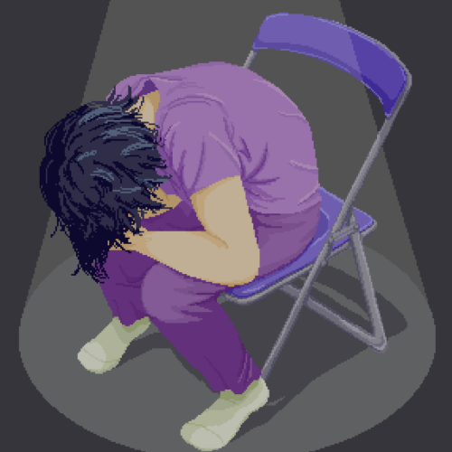

Kelen Trieu
My name is Kelen Trieu and I am a student at University of California, Riverside. I am currently pursuing a Bachelor of Arts degree in Sociology. I was born and raised in Southern California as a second generation Chinese-American and an elder sister to two younger brothers. I am also a proud pet owner and animal lover, living with 2 lovebirds (Melon and Lychee) and a toy poodle (Kiwi). Some of my favorite pastimes include reading, creating art, listening to music, watching shows or movies, and napping with my animals.
Originally, I actually wanted to be a veterinarian or work with animals so I could help them. I always felt that I could sympathize with others more than most people, especially with animals. As I got older, I realized that while I loved animals, I could not bear to witness them in pain, especially with no way for them to properly communicate what was wrong. I also began to notice more injustices and inequality in the human world as I got older. Witnessing all these social phenomena, I wanted to understand what caused them. However, I was also interested in humans in a general, cultural sense. After taking a course in criminology and another in anthropology during high school, I became interested in learning about how people functioned.
As of right now, I am expected to graduate after the Spring 2024 quarter at the earliest. While I did start my first school year at UCR as a “freshman”, I was technically considered a sophomore in the system due to my previous college credit. Back in my high school years at Mt. SAC Early College Academy, I actually took college classes alongside my high school classes in a dual enrollment program. While I thought I only took enough courses to shave off a single year from the typical four year college experience, it turns out that it is possible for me to graduate after only two years at UCR. So even though I just graduated from high school last year in 2022, I will likely be graduating from college next year in 2024. In addition to my current standing as a junior at UCR, I have had a 4.0 GPA from freshman year of high school up to now in college. Hopefully, I will be able to graduate with a 4.0 GPA as well.
While I do not have much job experience, I have worked for brief periods of time, done volunteer work, and worked on multiple projects. I worked for the UCR Dining Services as a student worker at Glasgow in 2022 and worked as an assistant clerk for the Los Angeles County RR/CC during the 2020 Presidential General Election. I also did community service and helped plant seeds at the Upper San Gabriel Valley Municipal Water District in 2020. From 2018 to 2019, I creatively wrote and edited stories to publish them online. In 2019, I worked on a marketing project where I designed a product and business. In 2018, I worked on creating a visual novel game and on creating awareness about environmental issues like fast fashion.
Experience
Student Worker
• Washing dishes in a timely, effective manner
• Assisting with food preparation
• Making sure both the kitchens and dining areas were clean by throwing out trash as well as cleaning and sanitizing high contact areas
Assistant Clerk
• Registered, checked in, and assisted voters during 2020 Presidential General Election using new technology such as the electronic pollbook
• Enforced COVID-19 protocols by cleaning and sanitizing the technology as well as wearing gloves, face masks, and face shields to ensure public safety
Creative Writing
• Wrote stories on Archive of Our Own; Assisted with story writing, dialogue, and editing
• Wrote original story; Wrote over 20k words and designed characters
• Created scripts and dialogue for games
Education
University of California Riverside
Mt. SAC Early College Academy
Portfolio
